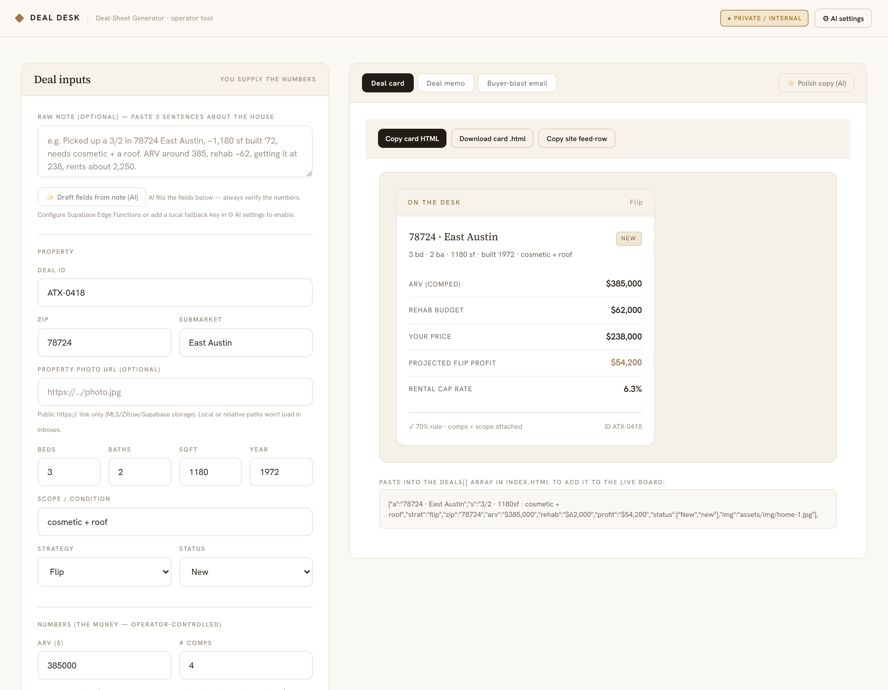
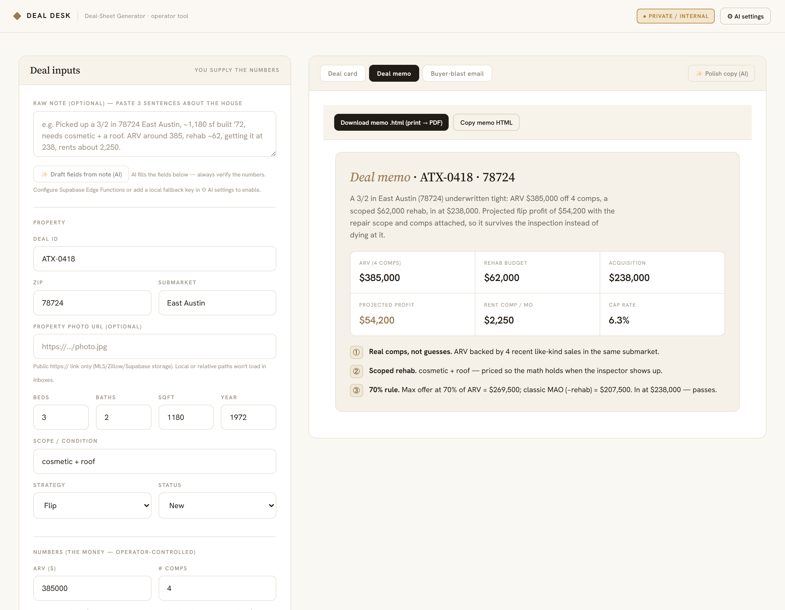
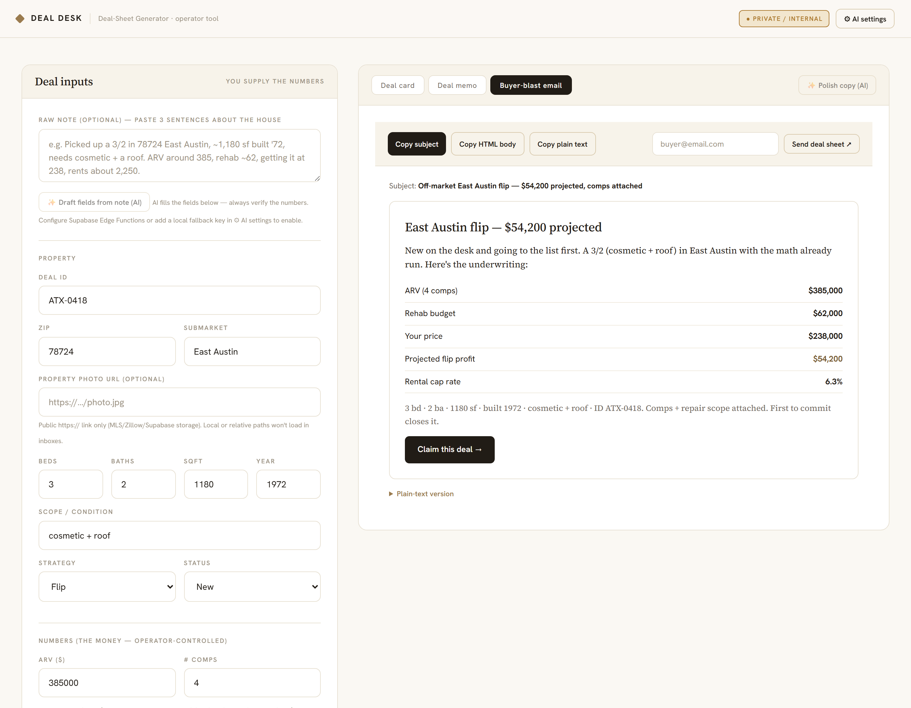

Operational UI · vertical tooling · rapid build
A Bloomberg-terminal-style operations dashboard for an off-market real-estate desk — a live deal feed, underwriting memos, and market intel in one screen — backed by an AI deal-sheet generator that drafts a card, a memo, and a buyer email from a three-sentence note. Built to see how fast a credible internal tool for a specific business could go from brief to working software.
A design-and-build study, not a live service. Every name, brokerage, deal, address, and figure is fictional sample data; the lead forms are demo-only. It exists to demonstrate the UI, the interactions, and the data model.
Built June 2026 · self-directed
The problem
Off-market real-estate operators run their whole pipeline out of spreadsheets and group texts. Deals, buyer lists, and the underwriting math live in different places — so good deals go stale, and investors can't trust the numbers enough to commit. The interesting challenge: give an operator one screen that runs both sides of a deal like a trading desk — sourcing on one side, a vetted buyer list on the other.
What it does
The engine · an AI deal-sheet generator
Behind the terminal is the tool the operator actually lives in. Paste a three-sentence note about a house and it produces three things in seconds: a deal card for the board, a printable underwriting memo, and a ready-to-send buyer-blast email. The money math is deterministic — projected profit, cap rate, and the 70% rule are computed in code, never guessed — while Claude drafts the fields from the note and polishes the prose in brand voice, leaving every number untouched.



The AI never sees a secret. Both the drafting and the sending run through Supabase Edge Functions, so the Anthropic and email keys stay server-side — the browser only invokes a function. A separate operator lead dashboard is gated by row-level security in Postgres: the login screen is just UX, the database itself only returns leads to the authenticated operator. With no backend configured, the tool degrades gracefully to templated copy, fully offline.
This generator is an internal operator tool, shown here as a case study — it isn't wired into the public demo above.
The story · STAR
Situation
Off-market real-estate operators manage sourcing, underwriting, and buyer lists across spreadsheets and blast texts. Nothing lives in one place, and the deal math isn't trustworthy enough for a cash buyer to move fast.
Task
Design and build a single "operator terminal" that runs the whole pipeline — polished enough to earn an investor's trust, and fast enough to prove in an interactive demo.
Action
Researched an unfamiliar vertical and its compliance constraints, designed the information architecture and data model (deals, memos, buyer buy-boxes), then built the full front end: a filterable live deal feed, per-property underwriting memos, an animated market-intel panel with an SVG trend chart, and two-sided lead capture. Then built the operator's daily driver: an AI deal-sheet generator that turns a short note into a deal card, memo, and buyer email — with Claude proxied through Supabase Edge Functions so no key ever ships to the browser, and an RLS-gated lead dashboard behind it. Verified on desktop and mobile.
Result
A working, interactive demo of a vertical operational tool that reads like a real product. It shows I can take a domain I don't start out knowing, model its workflow, and ship a credible internal tool quickly — self-directed, with AI-assisted development.
Try it in 20 seconds
Built with
Status & honest limitations
Interactive front-end demo, deployed. The deal board, filtering, memos, market charts, and forms all work on fictional sample data.
Self-directed project, built with AI-assisted development. All names, brokerages, deals, and figures are fictional.
Design note
The direction is "operator terminal × editorial" — Bloomberg-terminal precision with editorial confidence, and zero real-estate fluff. A near-black canvas, a single signal-green for live and positive figures, monospace for every number, and one editorial serif for headlines. The goal was an interface a numbers-driven investor would immediately read as credible.